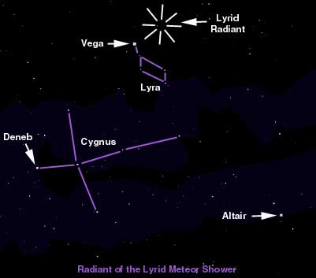

| Duration | April 16-25 |
| Maximum | April 21-22 |
| Hourly Rate | 10* |
| Radiant | RA=18.1 hours DECL=+33 degrees |
| Solar Longitude at Maximum | 32.1 degrees |
| Atmospheric Velocity | 49km per second |
| Average Magnitude | 2.4 |
| Persistent Trains | 15% |
| Radiant Drift | RA =+1.1 DECL=0 deg. |
|  |
The Lyrids are visible through most of the night, with the radiant rising around 9 p.m. (local time). This year, a bright 85-90% moon just past full will illuminate the sky. Not the best meteor observing conditions, unfortunately. The radiant is located high in the morning sky around 4:00 a.m., with an altitude of about 75 degrees. The chart shows Cygnus and Lyra and the bright stars Altair, Lyra and Deneb, our herald of the summer yet to come. Although Cygnus is the more prominent and well-known of the two constellations, Lyra contains the bright star Vega, which outshines all other stars in that area of the sky.
To best observe the Lyrids wear appropriate clothing for the weather and lay outside in a reclining lawn chair for best, comfortable viewing. Late in the evening it would be best to lay with your feet pointing towards the east and look straight up. During the morning hours, as the radiant gets higher, you could point your feet towards the north, west, or south and adjust your line of sight to about 50 to 60 degrees above the horizon. It is generally not advised to look directly at the radiant, because meteors will not move much and fainter ones might be missed.
When you see a meteor mentally trace it backwards and if you arrive near Lyra it is probably a Lyrid. Meteor observing is great fun in groups. Try arranging a group of lawn chairs and have each observer observe a different quadrant of the sky. This will be great practice for the Perseid Shower in August.
| Radiant | Duration | Maximum |
|---|---|---|
| Tau Draconids | Mar 13-Apr 17 | Mar. 31-Apr. 2 |
| Librids | Mar 11-May 5 | Apr. 17/18 |
| Delta Pavonids | Mar 21-Apr 8 | Apr. 5/6 |
| Pi Puppids (PPU) | April 18-25 | Apr. 23/24 |
| April Ursids | Mar 18-May 9 | Apr 19/20 |
| Alpha Virginids | Mar 10-May 6 | Apr 7-18 |
Typical of streams lying near the ecliptic, the Alpha Virginids show evidence of a long duration-spanning from March 10 to May 6-and a diffuse radiant. Maximum hourly rates typically reach between 5 and 10 during April 7 to 18, with the average radiant being RA=204 deg, DECL=-11 deg. The meteors are generally slow.
| April Virginids | April 1-16 | Apr. 7/8 |
| Gamma Virginids | April 5-21 | Apr. 14/15 |